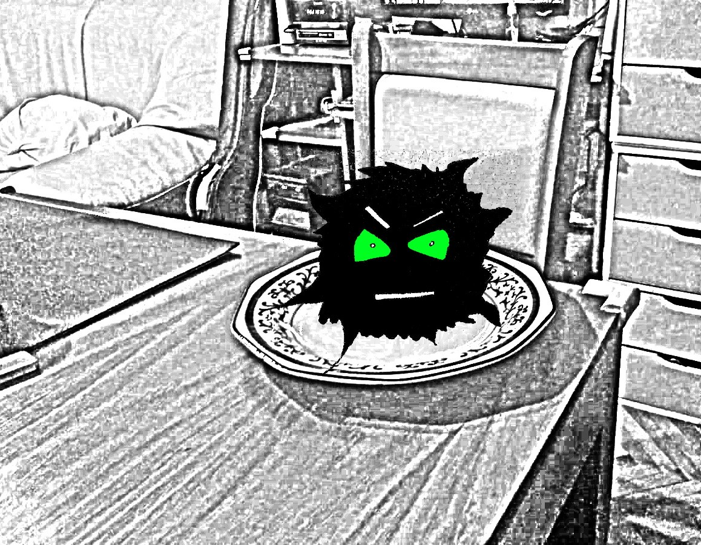

Pocas cosas hay más problemáticas que un kotroki mal alimentado.
Si se los deja estar, es probable que muy pronto se vuelvan algo sumamente difícil de manejar, y mucho más aún de sacar de la casa.
Cuando están mal alimentados se vuelven gordos y feos. Pero lo peor es que andan de mal humor todo el tiempo, y ocupando todos los espacios de la casa.
Así de complicados son los kotrokis.
Lo curioso es que muy pocos saben de ellos. Y casi nadie los conoce.
Son un secreto a voces. De esos que casi todos guardamos con vergüenza en el bolsillo. Y no lo hablamos con nadie.
Sin embargo todos son capaces de sentirlos. En especial cuando comienzan a crecer y a engordar.
Hernán tenía uno de esos. O varios. Nunca estuvo seguro del todo.
Se empezó a dar cuenta luego de la primera discusión entre sus padres.
La primera discusión fuerte. Porque antes siempre discutían también. Lo hacían por la plata, por los parientes, por el espacio, por el tiempo y también por el amor. Pero la diferencia es que esa vez, Hernán no se aguantó estar en la misma habitación que ellos. Salió corriendo y se metió en su habitación. Y se encerró hasta que dejaron de gritarse cosas feas.
Esa misma noche cuando intentó volver al living, sintió una opresión en el pecho que no sabía explicar, como si en esa pequeña casita de barrio ya no pudiera entrar el aire por las ventanas. Corrió hacia la puerta que daba al patio y la abrió, buscando aliviar el peso del aire. Pero poco cambiaba.
Fue entonces que lo vio.
Ahí, sobre la mesa, justo en medio de sus padres. Sentado sobre el arroz pasado y el churrasco frío. Y supo entonces que aquello era un kotroki. No porque lo adivinara. Sino porque aquella cosa negra, peludita y redondeada, carecía de pies, manos, nariz, orejas, pero no de ojos ni de una boca. Una línea que se dibujaba blanca e imperfecta, como la nata en el café con leche. Y que entre espasmos regurgitados, parecidos a un eructo, soltaba la misma palabra:
“Kotroki”
Luego parecía respirar. Pero no era eso. Sino que se esforzaba por tragar. Tragaba del aire algo que ni Hernán ni nadie eran capaces de ver. Pero que cuando entraba en la boca del bicho ese, lo ensanchaba como un escuerzo, y lo hacía crecer en palpitaciones temblorosas.
“Ko-troki”
¿Es que acaso su papá y su mamá no podían verlo? ¿Y su Hermano? ¿Cómo podían sentarse ahí, frente a frente y pretender que aquello no estaba entre medio de todo, robándoles el aire y las ganas de estar bajo el mismo techo? ¿Tan solo iban a pretender que esto no estaba pasando?
Lo triste era que la respuesta a todo aquello era que “sí”. Y Hernán no tenía más opción que sentarse allí con ellos. Porque lo llamaban, porque tenía que “colaborar”, y “portarse bien”.
Pero Hernán no podía ni tragar la comida.
Al otro día, bien temprano, el kotroki ya no estaba. Las ventanas de la cocina estaban del todo abiertas, así como la puerta del fondo. Así que Hernán quería creer que se había ido de la casa en algún momento de la noche.
Hernán compartió el desayuno con su madre y hermano mayor como todos los días. Por lo general su papá siempre saludaba antes de salir al trabajo. Pero esa mañana debió de haber salido más temprano que lo acostumbrado, porque ni siquiera llegó a verlo.
Hernán estaba feliz que el kotroki ya no estuviera en la casa. Sin embargo, algo no se sentía del todo bien en el ambiente. Su mamá parecía triste, y su hermano estaba más serio que de costumbre. Y por alguna razón el desayuno le sabía a la nada misma.
Por lo general nada de todo esto hubiera importado demasiado. Pero el recuerdo del ahogo que sintió la noche anterior aún seguía pesándole en el pecho.
Por la noche aquello no se hizo más fácil de soportar. Luego de la cena y antes de irse a dormir, el hermano mayor de Hernán se enojó con él. Algo tan tonto como que Hernán entrara al baño antes que él acabó desencadenando una discusión entre ellos, con empujones e insultos incluidos.
La mamá de Hernán tuvo que intervenir a pedido del padre, para detenerlos. Lo que acabó siendo todavía peor, ya que todo terminó con ambos hermanos aislándose en su habitación mientras los padres discutían en su lugar.
Al comienzo las palabras que se decían el uno al otro se escuchaban como apagadas. Amortiguadas por el peso de las puertas y el pasillo. Pero luego los sonidos y los gritos fueron atropellándose y apelotonándose uno arriba del otro, como hormiguitas desesperadas por salir.
El hermano mayor de Hernán, todavía enojado, se había refugiado en los auriculares, recostado en su cama y mirando a la pared. Así que no prestaba atención a nada. Pero Hernán estaba decidido a espiar por la cerradura lo que ocurría al otro lado del pasillo. Desde allí no podía ver a sus padres, pero sí pudo ver en el suelo, como derramándose, parte de la redondez del kotroki, toda peluda e inestable creciendo en eructos de satisfacción.
¡Había regresado!
“Kotro-ki…. Kooo-trokí”

Era obvio para Hernán que sus padres no podían verlo. Pero sí que podían sentirlo. Porque casi de inmediato buscaron salir de la habitación, a los atropellos, como si no aguantaran estar allí dentro junto a esa cosa, intoxicándoles el aire y las palabras, mientras se expandía y lo apretaba todo contra los muros y el suelo y el techo.
Hernán abrió apenas la puerta para observar mejor. Imaginaba que el kotroki los seguiría, de la pieza al living, y luego se quedaría allí, como la noche anterior. Pero no fue así. Fue peor que eso. Porque desde la puerta entreabierta pudo ver como desde la habitación de sus padres se derramaba el cuerpo oscuro, peludo y baboso del Kotroki. Ni siquiera se movía, sino que se esparcía por la casa.
Hernán cerró rápido la puerta y la trabó desde adentro. Sentía que le faltaba el aire, pero no sabía si era por el miedo y los nervios, o por causa de la opresión que generaba el Kotroki acercándose a la habitación.
Fue y sacudió a su hermano, que tenía toda la espalda transpirada al tocarlo y se despertó todavía más enojado que antes y también a los gritos.
—¿Por qué cerrás la puerta? ¿No ves que falta el aire acá? —, le decía mientras lo empujaba del camino.
“¿Es que acaso no lo veía tampoco?”, se preguntaba desesperado Hernán, agarrando a su hermano por la cintura y señalando la viscosidad del kotroki que ya comenzaba a meterse por debajo de la puerta. Intentando mostrarle.
Pero no. Su hermano tampoco lo veía. Pero la falta de aire y la opresión en la habitación también comenzaban a afectarlo.
Sin darse cuenta ambos hermanos comenzaron a buscar la manija del ventanal que se abría al patio. Y se arrojaron a sí mismos fuera de la casa.
Una vez allí, en el pasto, comenzaron a sentirse casi de inmediato mejor uno con el otro.
Ya un poco más aliviado y todavía con la cabeza en el suelo, Hernán pudo llorar y contarle a su hermano todo lo que veía. Y de como el Kotroki iba ocupando todos los espacios de la casa. Haciéndose cada vez más grande y viscoso, al punto de que le oprimía el pecho y le sacaba el aire en todo momento ya.

Su hermano ablandó la expresión de su rostro. Y el gesto ceñudo que venía arrastrando desde hacía varios días comenzó a desaparecer. Lo escuchó en silencio, y cuando terminó de relatar se acercó para abrazarlo.
Cuando miraron por la ventana hacia dentro de la casa el kotroki se había retirado de la habitación. Aunque solo era Hernán el que podía verlo, su hermano tenía que admitir que también se sentía mucho mejor que antes.
Volvieron a entrar por el ventanal y tomados de la mano se aventuraron hacia el pasillo.
Sus pasos allí ya no eran tan ligeros como en la habitación o el patio, pero Hernán se daba cuenta que al verlos juntos el kotroki buscaba alejarse de ellos.
Así caminaron hasta el final de pasillo. Acercándose de a poco y como podían adonde estaban sus padres. Los pasos eran más duros mientras más se acercaban a la discusión, pero ninguno de ellos retrocedía más que para tomar impulso.
Cuando llegaron al living, el kotroki ya había hecho nido en el techo de la casa y desde allí se expandía hacía todos lados, derramándose en gotas negras y peludas que lo manchaban todo.
Hernán tenía mucho miedo. Pero su hermano nunca le soltó la mano.
—Mamá, papá —, dijo el hermano de Hernán. Con su voz apenas que cabía en un silbido—. Hernán tiene algo para contarles.
Las palabras no salían tan fácil. Por lo que demoró un poco más de lo que esperaba en poder contarles todo lo que le pasaba y todo lo que había visto estos días. Allí dentro y frente a ellos todavía sentía el fuerte peso opresivo del kotroki. Cuando miraba a su alrededor podía notar hasta qué punto se había extendido. Pero lo que más miedo le dio es que creía adivinar en el rostro de sus padres las marcas oscuras del kotroki.
Tenía que ser valiente. Así que les contó. Ya no importaba si ellos no le creían.
La primera en acercarse fue su madre. Que lo abrazó y lloró junto a ellos. Pero ya no eran lágrimas tristes ni manchadas del color del kotroki, sino que hasta sonreía un poco mientras lo besaba y le hablaba tiernamente y le decía que todo iba estar bien. Hernán notó que su padre quería acercarse, pero no sabía cómo. Él era el más afectado de todos. Daba pasos vacilantes hacia ellos mientras lloraba. Pero no fue hasta que Hernán lo llamó y la madre asintió con la cabeza que se animó a abrazarlos. Se arrodilló en el suelo del living y extendió su abrazo hasta tocarlos y contenerlos a todos.
Ya no hacía falta mirar. Hernán sabía que el kotroki no estaba más en su casa. Se había ido.
Ya no tenía de que alimentarse allí.
Pero Hernán y su familia sabían también que desde ahora tenían que estar atentos.
Después de todo, pocas cosas hay más problemáticas que un kotroki mal alimentado.